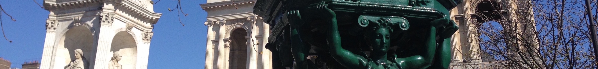
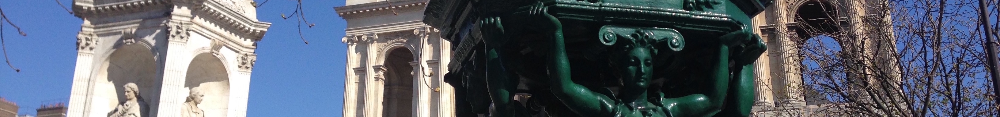
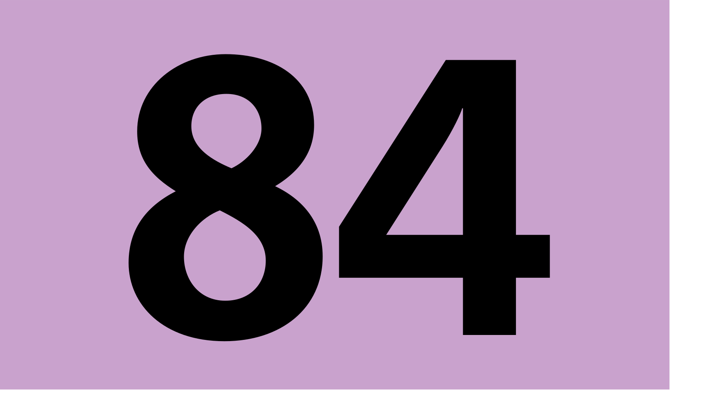

How to get there
It's easy to get to Place Saint-Sulpice, whether by metro, bus, taxi, bicycle, or (best yet) on foot. The square’s central location makes it easy to explore many Left Bank attractions, including the Luxembourg Gardens, Saint-Germain-des-Prés, and the Bon Marché department store.
Address
Place Saint-Sulpice75006 Paris
France
Metro
- Saint-Sulpice
- Mabillon
- Sèvres-Babylone
Bus
- Line 58
- Line 63
- Line 70
- Line 84
- Line 86
- Line 87
- Line 89
- Line 96